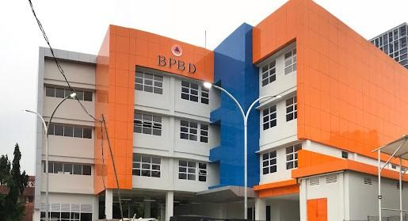
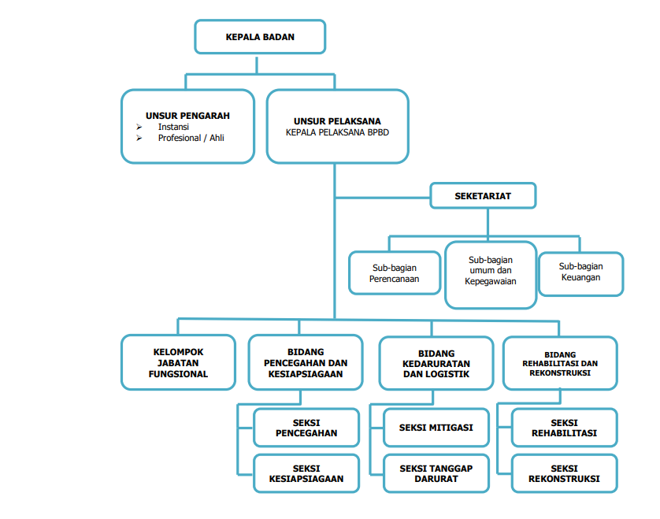
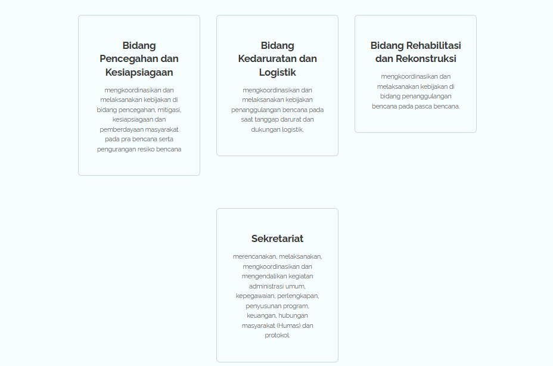

Profil Dinas

BPBD Kota Tangerang Selatan dibentuk sebagai respons terhadap potensi bencana yang dihadapi wilayah ini. Sebagai bagian dari sistem penanggulangan bencana nasional, BPBD berfungsi untuk mengkoordinasikan, mengorganisir, dan melaksanakan kegiatan penanggulangan bencana yang terencana dan terpadu sesuai dengan Undang-Undang Nomor 24 Tahun 2007 tentang Penanggulangan Bencana.
Tugas Pokok BPBD
BPBD Kota Tangerang Selatan memiliki tugas utama untuk mengelola risiko bencana, memitigasi
dampak bencana, dan melaksanakan langkah-langkah darurat saat bencana terjadi. Tugas ini
termasuk koordinasi lintas sektor dan penguatan kesiapsiagaan serta pemulihan pasca bencana.
Jenis Bencana yang Ditangani
BPBD menangani berbagai jenis bencana yang berisiko di Kota Tangerang Selatan, seperti:
- Banjir
- Tanah Longsor
- Angin Puting Beliung
- Gempa Bumi
- Pohon Tumbang
- Kegagalan Teknologi
Regulasi dan Peraturan
Sebagai lembaga yang bertanggung jawab, BPBD Kota Tangerang Selatan tunduk pada Peraturan
Walikota Nomor 34 Tahun 2011 dan Peraturan Daerah Nomor 2 Tahun 2012, yang mengatur tugas,
fungsi, dan tata kerja BPBD sebagai bagian penting dari sistem penanggulangan bencana
daerah.
Peran BPBD dalam Penanggulangan Bencana
BPBD berperan dalam memitigasi dan mengurangi dampak bencana melalui berbagai upaya,
seperti:
- Peningkatan kesiapsiagaan masyarakat dalam menghadapi bencana.
- Penguatan struktur dan koordinasi antar lembaga terkait dalam menghadapi bencana.
- Pelaksanaan pemulihan pasca bencana untuk mengurangi dampak sosial dan ekonomi bagi masyarakat.
Program dan Kegiatan BPBD
Program-program yang dilaksanakan BPBD Kota Tangerang Selatan bertujuan untuk membangun
ketangguhan masyarakat, di antaranya:
- Pelatihan dan simulasi penanggulangan bencana untuk masyarakat dan aparat.
- Penyuluhan tentang mitigasi bencana dan kesiapsiagaan.
- Pengembangan infrastruktur penanggulangan bencana di wilayah rawan bencana.
Visi
"TERWUJUDNYA TANGERANG SELATAN UNGGUL MENUJU KOTA LESTARI, SALING TERKONEKSI, EFEKTIF DAN
EFISIEN"
Misi
1. Pembangunan Sumber Daya Manusia
2. Pembangunan Infrastruktur yang Saling Terkoneksi
3. Membangun Kota yang Lestari
4. Meningkatkan Ekonomi Berbasis Nilai Tambah Tinggi
5. Membangun Birokrasi yang Efektif dan Efisien
2. Pembangunan Infrastruktur yang Saling Terkoneksi
3. Membangun Kota yang Lestari
4. Meningkatkan Ekonomi Berbasis Nilai Tambah Tinggi
5. Membangun Birokrasi yang Efektif dan Efisien
Struktur Organisasi

Bidang dan Sekretariat
